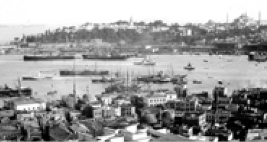
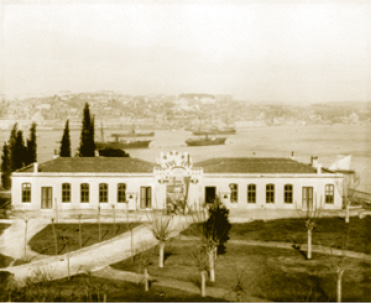
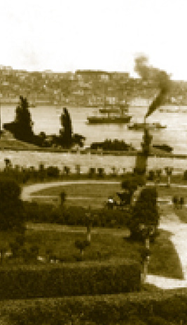

OSMANLILARDA SARAY KAVRAMI
Osmanlı merkezî hükümetinin ve devletinin başında padişah ve saray yer alır. Devlet reisinin ikametgâhı ve görev yeri olarak saray, Osmanlı İmparatorluğu’nun da idare merkezidir.
Bir bakıma devlet reisinin ikamet yeri ve ofisi olan sarayın 19. yüzyılı, 16. ve 17. yüzyıllardakinden daha az bilinir. Hele Osmanlı Sarayı üzerindeki tetkikleri, muasırı Rusya Sarayı ile karşılaştırmak mümkün olmadığı gibi; geçmiş asırlardaki Bizans Sarayı’na dair monografi ve bilgilerle karşılaştırmak da mümkün değildir.
Topkapı Sarayı, İstanbul’da Osmanlı yönetim bölgesinin merkezinde yer alır. Fatih Sultan Mehmed Han, İstanbul’un Fethi ile Doğu Roma İmparatorluğu’na son verir. Burada Bizans kavramı üzerinde de durmak gerekir, çünkü Bizans denilen imparatorluk, gerçekte Doğu Roma İmparatorluğu’dur. Bizans ismini o imparatorluğun insanları hiçbir zaman kullanmamışlardır. Bizans, 16. yüzyılda Alman âlimlerden Hieronimus Wolff’ün kullandığı bir isimdir. İmparatorluğa Bizans, bu şehre Bizans ve bu ülkenin insanlarına Bizanslılar demek 16. yüzyılın Batı Avrupa’sının yakıştırmasıdır. Arkasında Mukaddes Roma-Germen İmparatorluğu’nu meşrulaştırmak gibi siyasi bir misyon yatmaktadır.
Fatih Sultan Mehmed Han, fetihten sonra, bugünkü Beyazıt’ta İstanbul Üniversitesi’nin bulunduğu yerde bir saray yaptırır. Bu sarayın hududunun bir hayli geniş olduğu ve Süleymaniye Camii’nin yerinin de bu sahada bulunduğu malumdur. Bu ilk yapılan saray “Eski Saray”, Topkapı da “Yeni Saray (Saray-ı Cedid)” olarak anılmıştır.
Fatih, önce Çinili Köşk’ü, ardından da Topkapı Sarayı’nı inşa ettirir ve Topkapı Sarayı’na geçilir. Yeni Saray’a Fatih’in verdiği isim Saray-ı Cedid’dir. Bunun dışında saray, Saray-ı Amire, Südde-i Saadet, Der-i Devlet gibi isimler de almıştır. Saraya Topkapı isminin verilmesi çok sonra olmuştur. Ne gariptir ki; 19. yüzyıldan itibaren saraya, günümüzde bulunmayan bir sahil sarayının ismi verilmiştir. Sultan I. Mahmud tarafından Bizans surlarının yakınına büyük bir ahşap sahil sarayı yaptırılmış ve bu sahil sarayına önündeki selam toplarına nispeten “Topkapusu Sahil Sarayı” denilmiştir. Bir yangında tamamen kül olan sahil sarayının ismi saraya verilmiştir.
Topkapı, mütevazı fakat görkemli yapısıyla, hoş bahçeleri ve özgün konumuyla, içindeki hazinelerin ve arşivlerin zenginliğiyle eski imparatorluğumuzun evi ve en büyük sarayıdır.
Topkapı, Osmanlılar için hem bir yönetim yerleşkesi hem de padişah evidir. Bu yönüyle bir padişah için Topkapı hem bir ikametgâh hem de bir görev yeridir.
Saray’da Bizans İzleri
Sarayın bulunduğu bölge eski Bizans’ın da yönetim merkezi olup Topkapı, eski Bizans Sarayı’nın üzerine yapılmıştır. Bizans Sarayı’ndan kalan taşların ve sütunların sarayın yapımında kullanıldığı bilinir. Bugün Topkapı’da Bâbü’s saade’ye giden yol üzerinde Bizans Sarayı’ndan kalan su sarnıcı hâlâ mevcuttur ve koruma altındadır.
Sarayın mutfak bölümünde dev sütun başlıkları daha evvel Ayasofya’nın önünde bulunan Yustinianus anıtını taşıyan dikilitaşın sütun başlıklarıdır.
Lale Bahçesi’nde bulunan Vaftiz Havuzu da sarayın Bizans’tan kalan eserlerindendir. Bütün bunlar Osmanlılarda herhangi bir tarihî miras takıntısı olmadığının güzel misalleridir ki bu durum günümüz toplumunda görülen bazı aşırılıklara karşı mühim mesajlar içermektedir. Kendinden evvelki mirasa karşı duyulan bu saygı, büyük bir medeniyet ve insanlık mirasını sahiplenmenin de delilidir.
Bu ilginç saray, yeryüzünün en özgün hükümdar evidir. Kanaatimce gerek konumu gerek barındırdığı eserler bakımından dünyanın en güzel sarayıdır. Bu hâliyle Topkapı’nın, diğer saraylarla mukayesesi kabul edilemez.
Topkapı Sarayı, aynı zamanda imparatorluk bürokrasisini temsil eden anıtlardandır. Mütevazı ama çarpıcı ve her şeyden önce çok güzeldir. Dünyanın en güzel şehrinin en güzel köşesine inşa edilmiştir. Denizden bakıldığında ise muhteşemdir. Zaten amaç da, hem ihtişamı hem de tevazuu bir araya getirmektir.
Topkapı ve Ayasofya
Yüzyıllarca benzeri yapılamayan Ayasofya, kentin en önemli camiidir, fethin sembolüdür. O vakte kadar yeryüzünün en büyük, en parlak, en şöhretli mabedidir. Fatih, istese adını “Fethiye Camii” yapabilirdi; ancak insanlık mirasına duyulan Osmanlı saygısı gereği ne camiin adı ne de ana yapısı değiştirilmiştir.
Ayasofya günümüze kadar muhafaza edilmişse bunu Osmanlı tarafından bütün imparatorluğun hatta bütün İslâm âleminin protokolde birinci camii olmasına borçludur.
Hükümdarların çoğu, cuma namazlarını ve teravihleri bu camide kılarlardı. O dönemde inşa edilen bir sarayın buraya yakın olması gayet tabiidir. Ancak Osmanlıların Ayasofya’nın karşısına Sultanahmet Camii gibi bir zarafet abidesini diktiklerini de unutmamak gerekir.
Saray, dünyanın en güzel noktasında, bizim “Sarayburnu” dediğimiz uçta yer alır. Şehrin her tarafından görülür ve -bir zamanlar- şehrin her tarafına hâkim bir noktadadır. Günümüzde tarihî ve kültürel mirasımızdan bihaber şekilde ve bu mirası baltalarcasına inşa edilen çok katlı çirkin yapılar, şehrin pek çok yerinden sarayın görülmesine mâni olduğu gibi Topkapı Sarayı’ndan görülen manzarayı da gölgelemektedir. Mimar Sinan’ın Süleymaniye’yi inşa ettiği yer bir cami inşaatı için elverişsiz iken Mimar Sinan, Haliç’ten bakılınca muhteşem bir silüet meydana getirmek maksadıyla temelleri uzun bir süre bekletmiş ve Süleymaniye’yi şimdiki yerine yapmıştır. Günümüzde bu hassasiyet yok denecek seviyededir.
Sarayın İnşası
Saray, bir seferde yapılıp bitirilmiş değildir, zaman zaman yapılan ilavelerle oluşmuştur. Özellikle Kanuni Sultan Süleyman devrinde devletin genişlemesiyle birlikte saray hizmetlilerinin sayısının artması, yeni binaların yapılmasını zorunlu kılmıştır.
Sultan III. Murad ve Sultan IV. Mehmed dönemlerinde de Fatih’in yaptığı binalara yeni ilaveler yapılmıştır. Buna rağmen sarayda yapılan ilaveler âdeta birbirini tamamlayan bir görünüm arz eder. Genel olarak bakıldığı zaman Sultanahmet ve Ayasofya ile birlikte bir bütünlük teşkil eden sarayın, buradaki görünüme büyük bir zenginlik kattığı açıktır. Bunu bugün denizden çekilen resimlerde de görmek mümkündür.
Saraya yapılan son ilave Sultan Abdülmecid’in devrinde yapılan Mecidiye Köşkü’dür. Topkapı’ya yapılan bütün binalar günümüze ulaşamamıştır. Bir kısmı zamanla yıkıldığı gibi bazıları da yanmıştır.
Sarayın Konumu
Sarayın bulunduğu mekân, aynı zamanda Hipodrom’a ve At Meydanı’na da yakındır. Türk tarihinin bu en büyük sarayının İstanbul’da, şehrin en gözde mekânında kurulmuş olması büyük sultan Fatih’in basiretinin de ispatıdır.
Genellikle yöneticilerin konakları da burada yer alır. Mesela unutulmaz vezir-i âzamlardan Sokullu’nun konağı, şimdiki Sultanahmet Camii’nin bulunduğu mevkidedir. Karşısında Sadrazam Maktul (veya Makbul) İbrahim Paşa’nın sarayı yer alır ki günümüzde Türk-İslâm Eserleri Müzesi’dir.

1890’lı yıllarda Galata Kulesi’nden Sarayburnu’nun görünüşü
Önemle belirtilmesi gereken bir özellik, bütün geleneksel kentlerdeki gibi İstanbul’da da 19. yüzyıla kadar yönetim merkezinde kurumlaşan devlet ofislerinin yer aldığı sabit binaların olmamasıdır. Bu bölgede, saray ve sadrazamlık (Bâb-ı Âli) ve Bâb-ı Meşihat (Süleymaniye) dışında 19. yüzyıla kadar göze çarpan bir devlet ofisi yoktur. Bizzat şehrin belediye başkanı ve en yüksek yargı görevlerini yerine getiren İstanbul kadısı bile özel konutu nerede ise orayı makam odası ve mahkeme olarak kullanırdı. Kasımpaşa’daki Kaptanpaşa ofisi, Süleymaniye’deki Ağakapısı ve Bâb-ı Meşihat (şeyhülislâmlık) olan bina bunun istisnasıdır. Kaptanpaşa, donanmanın semtinde, yeniçeri ağası ise güvenlik görevi dolayısıyla şehir merkezinde bulunur.
İhtişam ve Tevazu
Biz Osmanlı için “imparatorluk” diyebiliriz, ama “devlet” demeyi tercih ederiz. Çünkü devlet sözünde bir mistisizm vardır. Buna bağlı olarak da böyle bir devletin yönetim merkezi anlayışında din faktörünün inkâr edilemez bir etkisi olduğundan bahsedilebilir. Topkapı Sarayı, bu yönüyle Osmanlıda ihtişamla tevazuu, din anlayışı ile dünya anlayışını bir arada gösteren önemli bir misaldir.
Müslüman bir hükümdar ve halife olarak padişah, bütün dünya Müslümanlarının lideridir ve bunun gösterilmesi gerekir. Bu bakımdan saray, aynı zamanda Müslümanların halifesinin makamıdır.
Saray, sadece Müslümanlar için değil Hıristiyanlar için de mühim eserlere ev sahipliği yapar. Bazı peygamberlere ait kutsal emanetler gibi. Nitekim Bizans’tan devralınan Vaftizci Yahya’nın kemikleri de bu cümledendir.
Topkapı Sarayı, her gün ortalama on binden fazla ziyaretçiyi ağırlamakta ve her geçen gün ziyaretçi sayısı artmaktadır. Tarihe olan ilgi zaviyesinden bu durum sevindirici olmakla birlikte, sarayın yıpranmaması ve gelecek nesillere ulaştırılması için ilerleyen zamanda bir sınırlama getirilmesi gerekmektedir.

Sarayın arazisi içinde bulunan karakolhane

Sarayın has bahçesi Gülhane